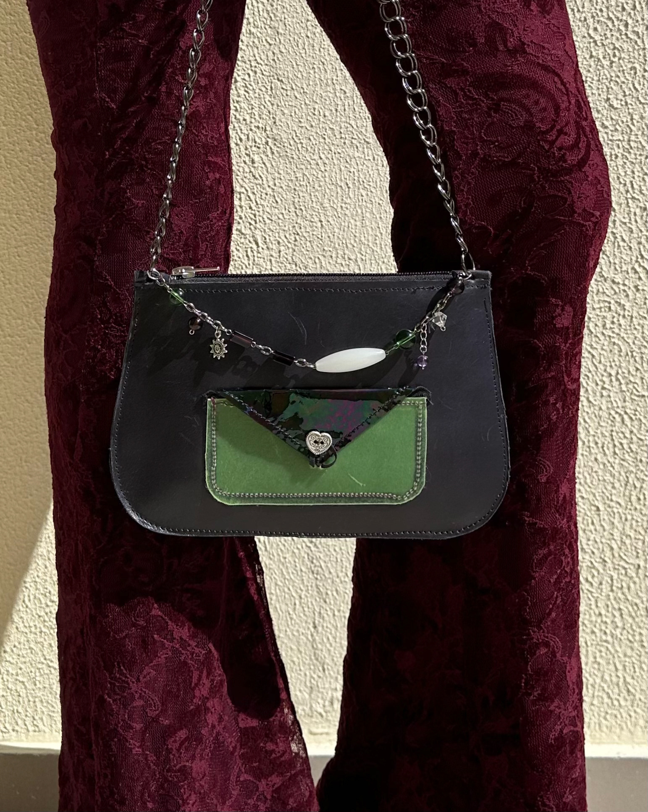
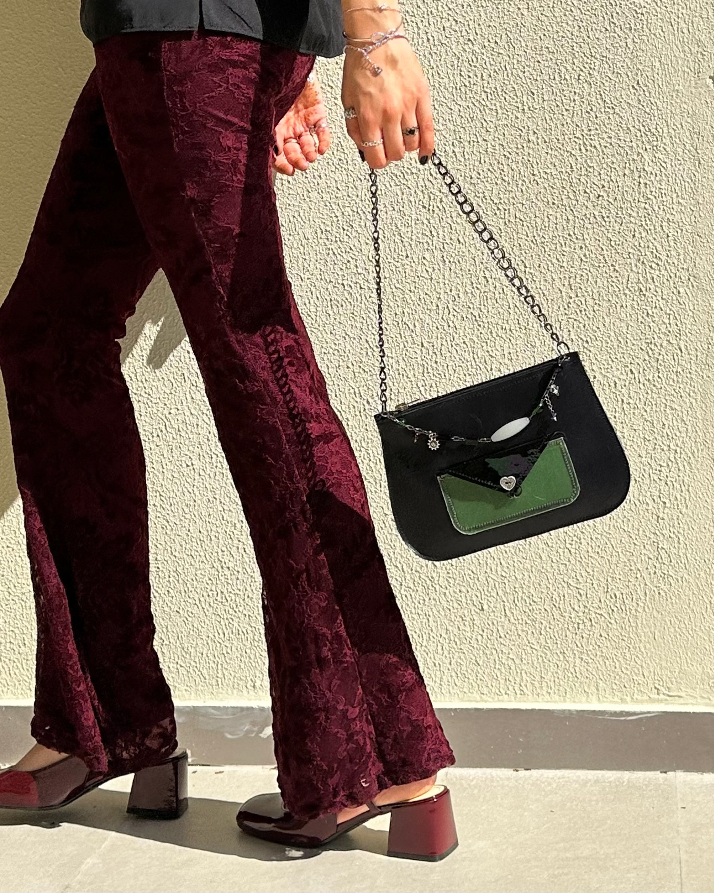
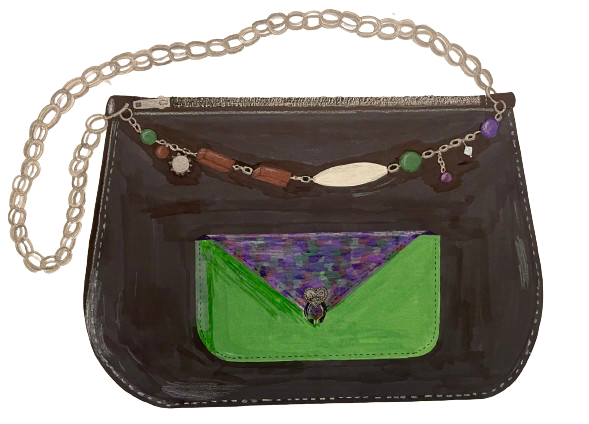

Experimental Media
Effervesence


I designed and created this handbag during my Accessory Design course as well. It was the first bag I ever made. It is made of old fabric scraps from my professor’s studio. The black base is of faux leather, the green translucent pocket is of environmentally-friendly leather made from recycled plastics, and the pocket flap is of iridescent cloth. The chain detail was also crafted by me, to complete the look of my handbag.
Process
